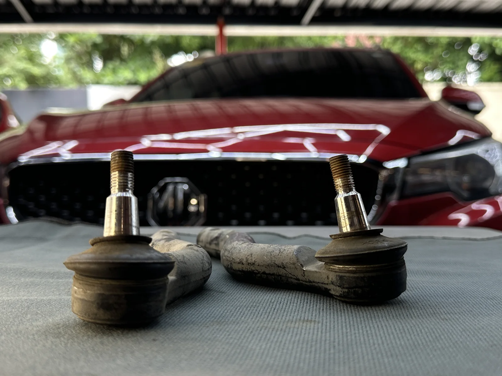
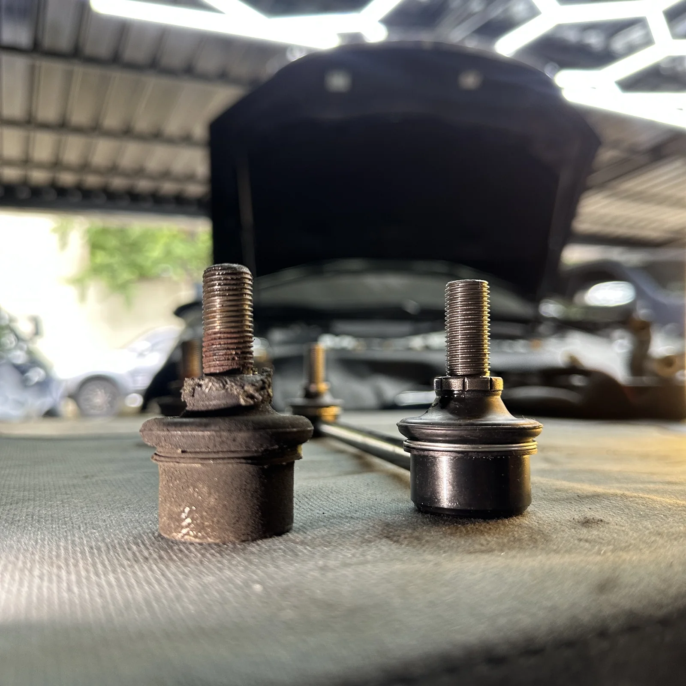
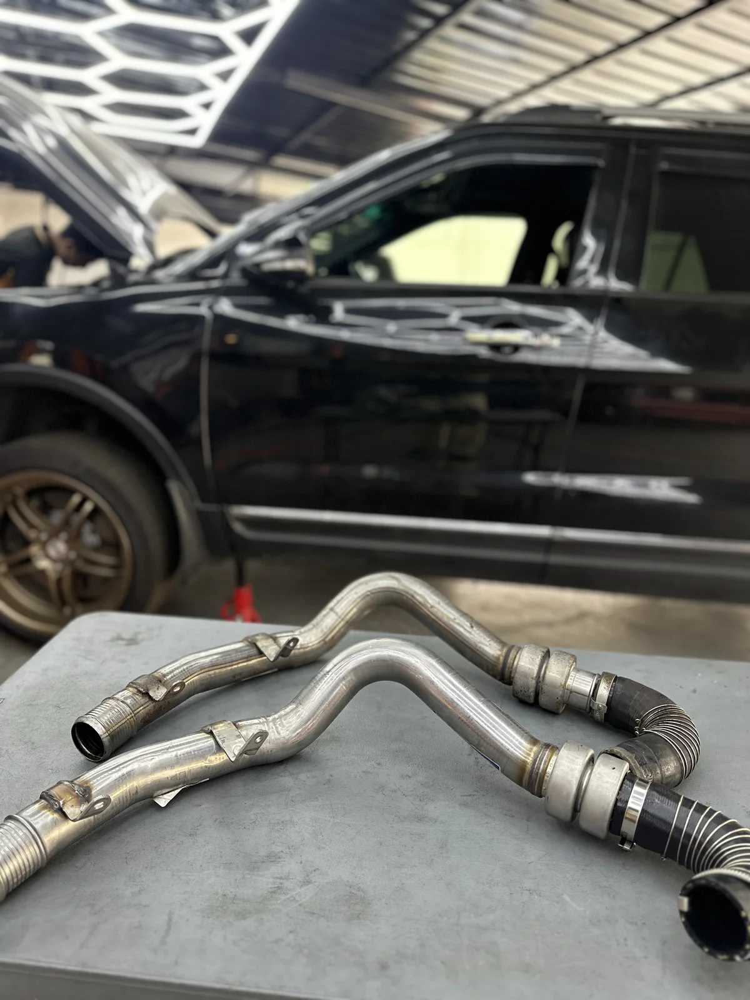
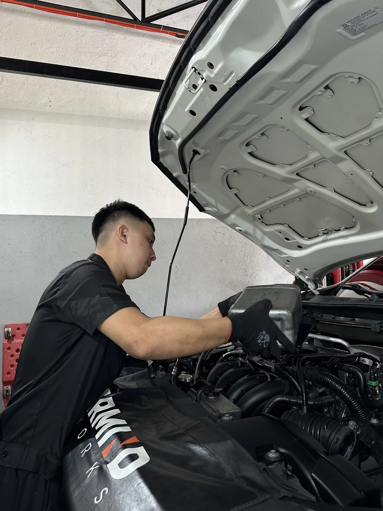

01
Inspect
Start with the complaint, vehicle history, visible condition, and the systems connected to the symptom.
OUR WORK & PROCESS
A premium workshop experience should make the repair process easier to understand. Mastermind’s site is built around a simple flow: inspect, diagnose, explain, authorize, and verify.
01 — THE PROCESS
The process is intended to reduce guesswork and make the reason behind each recommendation easier to follow.
Start with the complaint, vehicle history, visible condition, and the systems connected to the symptom.
Use scan information, testing, and measurements where appropriate to narrow down the actual cause.
Turn technical findings into clear information: what was found, why it matters, and what can happen next.
After approved work, perform checks appropriate to the repair before the vehicle is released.
02 — EVIDENCE
Not every concern needs every test. The useful evidence depends on the vehicle and the problem being investigated.
SCAN DATA
Fault information and live vehicle data can help identify the system or condition that needs further checking.
MEASUREMENTS
Electrical readings, pressure, temperature, clearances, or other measurements may be used when relevant to the concern.
VISUAL FINDINGS
Wear, leaks, damage, looseness, contamination, and component condition can provide important context.
FUNCTION CHECK
Verification may include a scan, operation check, road test, measurement, or reinspection depending on the work completed.
03 — DOCUMENTED WORK
Actual Mastermind workshop photos showing inspections, removed components, technicians at work, and documented vehicle condition.






START WITH THE SYMPTOM
If you are not sure which service applies, consult the team first or schedule a diagnostic visit.